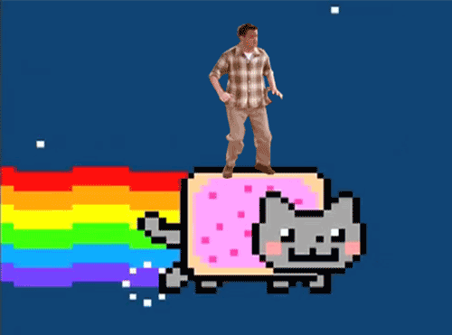
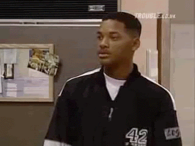
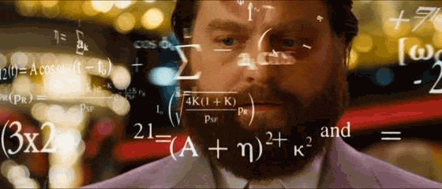
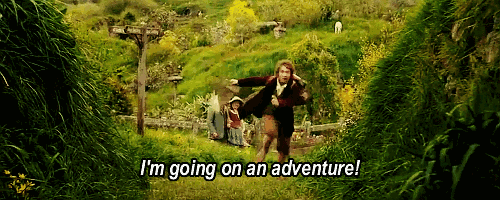
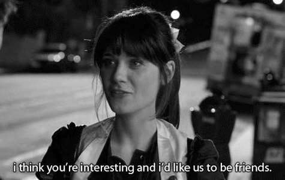
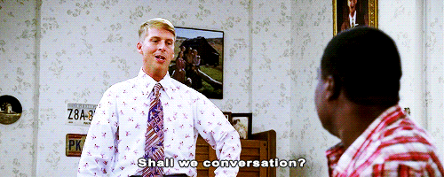
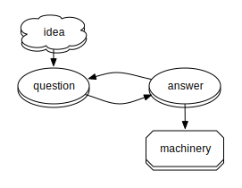
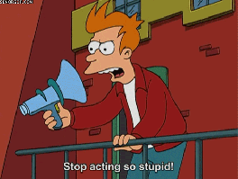

oh no, school is ending
celebrate! you've got a chance
physicists have it easy... we got skillz
you know how to learn
problem solving
remember those impossible problem sets? you made it through
math
you may not know about unrammified maps between schemes, but you know more math than 99.99% of people
i can't stress this enough
programming
from mathimatica to python

many skills == well rounded
physicists have many skills that make them well rounded
about my voyage
undergrad: utoronto
astronomy / physics
grad: nyu
physics!
left after 1.5 years
bitly
data science engineer
(or something like that)
why i decided to leave academia
- things got too abstract
- academia is sllowww at doing new things
- found myself more interested in other things
time for a new adventure!
how did i make the switch?
show the world
fill up your github or a blog
go to meetups, give talks
find a SMALL company
more risk, but definitely more fun
be interested
find somewhere where you are genuinely interested in the problems
bitly? spotify? tumblr? google? they all want you!
talk to people!
have some beer with some companies
find people you will enjoy working with

don't care about job titles
companies want problem solvers
show them you are that person
what is a data science engineer?
ideas + data = cool stuff

felt like normal research
some things i made at bitly
- rt.ly
- what's happening on the internet?
- dragoneye
- what are the current and historical clickrates on concepts?
- content_extractor
- what is the content on a website?
- fuggetaboutit
- who has been to this website in the past N days?
- forgettable
- what is the current state of this distribution?
- nsq
- how do we get data to go everywhere it needs to go?
all these projects used my skills from physics
example problem
you have ~3000 clicks / second... at any given time, what are the most interesting pages?
example problem
you have several hundreds of millions of users a month. given a particular one, did they ever click on nytimes? how about bbc? how about in the last N days?
problems you may have making the switch
academia helps academia
industry "helps" people
the dreaded "bottom line"
things you'll love
freedom!

make a difference
help real people
most companies <3 opensource
things to remember
- you have the skills, you just need to decide which ones you want to use
- people are looking for you, make yourself known
- industry can be similar to academia if you want it to be
- industry is a lot less formal than academia... treat it that way!
- try many things out! a lot of places will do trial employment so both you and the company knows it's a good fit
ps: bitly is hiring
contact me if you want to give it a shout!
/